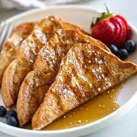

French Toast

There's nothing better than French toast for Sunday breakfast!
Thick slices of bread, soaked in a mixture of beaten eggs with milk and cinnamon, toasted in a frying pan, and served with butter and maple syrup. This has to be one of my favorite, and most indulgent, breakfast dishes.
Ingredients
- 4 large eggs
- 2/3 cup milk
- 2 teaspoons cinnamon
- 8 thick slices 2 day old bread
- Butter (can substitue vegetable oil)
- Maple syrup
Optional
- 2 teaspoons freshly grated orange zest
- 1/4 cup triple sec
- Fresh berries
Instructions
- In a medium bowl, whisk together the eggs, milk, and cinnamon. Stir in the orange zest and/or triple sec if using. Whisk the mixture until well blended and pour into a shallow bowl, wide enough to place a slice of the bread you will be using.
- Place each slice of bread into the milk egg mixture, allowing the bread to soak in some of it.
- Melt some butter in a large skillet over medium high heat. Shake off the excess egg mixture from the bread and place the bread slices onto the hot skillet. Fry the French toast until browned on one side, then flip and brown the other side.
- Serve the French toast hot with butter, maple syrup, and/or fresh berries.
Return to mainpage